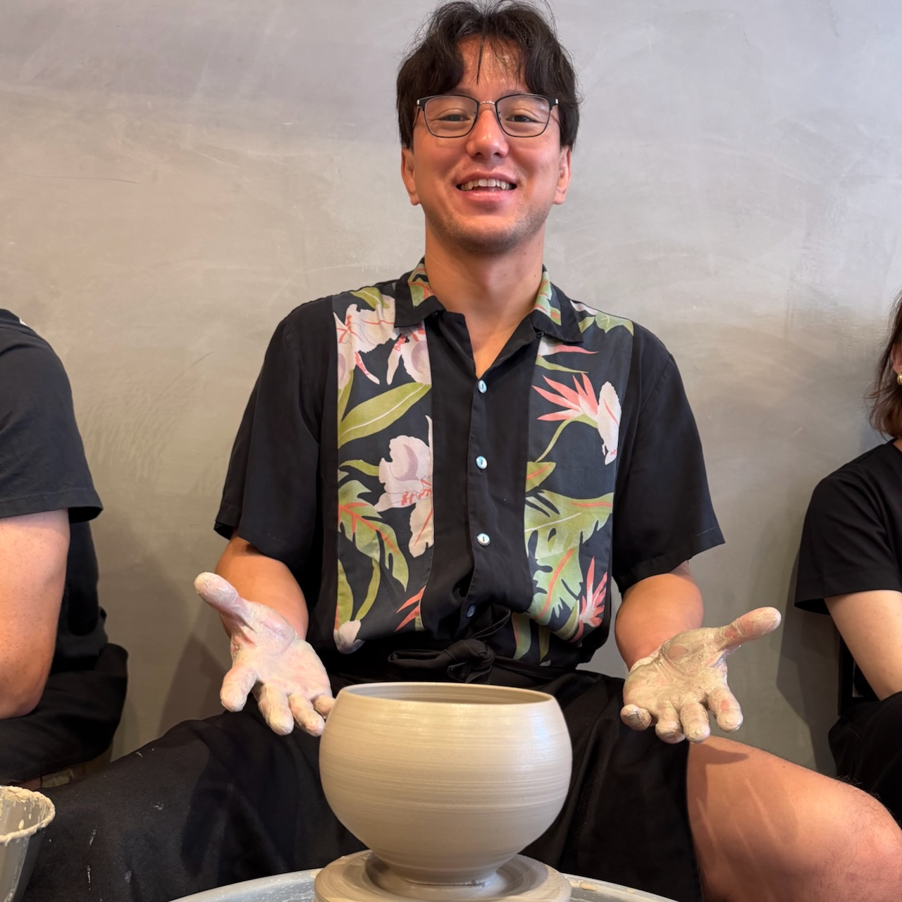

Hi, I'm Kwat
I was an MD-PhD student at Stanford University School of Medicine, got my PhD in the Mark Davis laboratory, and left the MD program to start Caucell

Link
Craft
- GitHub
- Google Scholar
- Gene Set Enrichment Analysis
- SBiDer: Synthetic Biocircuit Developer
- Guardiome
- Helixa
- OncoGPS
- The Adventures of Beri: the Story of Borrelia burgdorferi
- The Adventures of Sam: the Story of Staphylococcus aureus
- Immunogram: a Generalized Framework to Measure a Person's Immune System
- Full-stack platform for measuring the human immune system
- Caucell